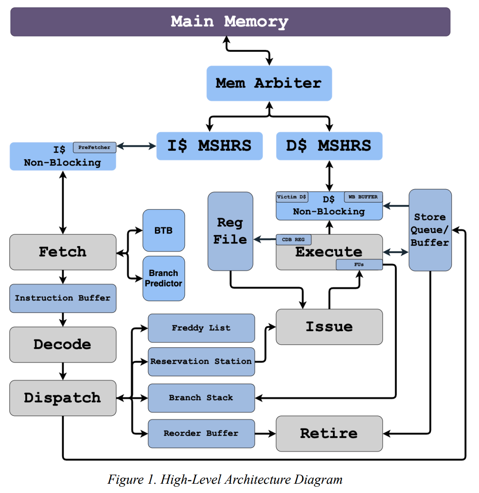
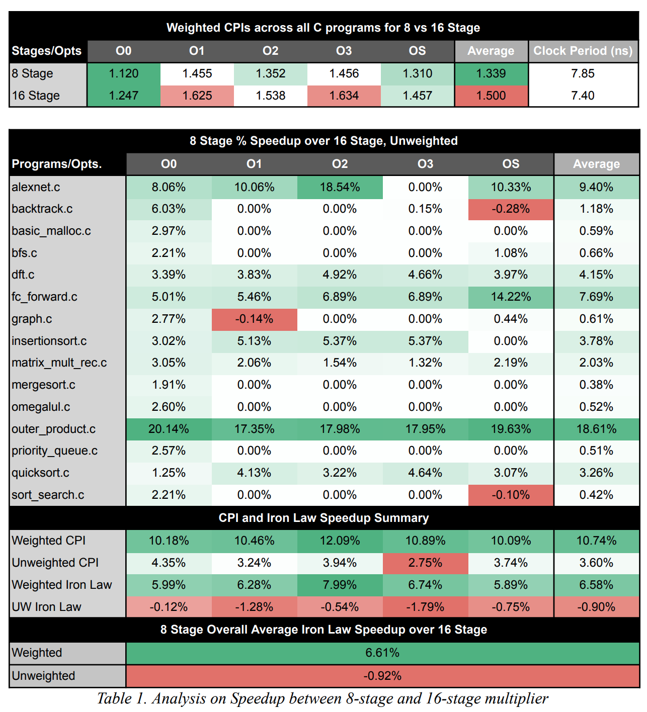

127 mhz risc-v cpu


overview
we designed and implemented a high-performance out-of-order superscalar processor based on the mips r10k architecture, incorporating advanced features such as n-way superscalar execution, early branch resolution, early tag broadcasting, and a tournament branch predictor.
the design includes a non-blocking 16-way associative data cache with a victim cache, instruction prefetching, and full support for out-of-order memory execution via a store queue with load-to-store data forwarding. Key architectural enhancements include a unified freddy list for register management, fifo-based mshrs, and dedicated load, store, and writeback buffers.
the processor achieved a 7.85 ns clock period, with an average weighted CPI of 1.12, corresponding to 8.79 ns per instruction, demonstrating strong performance and efficient exploitation of instruction-level parallelism.
tools
- verilog / systemverilog, tcl, verdi, bash, systemverilog assertions (sva)